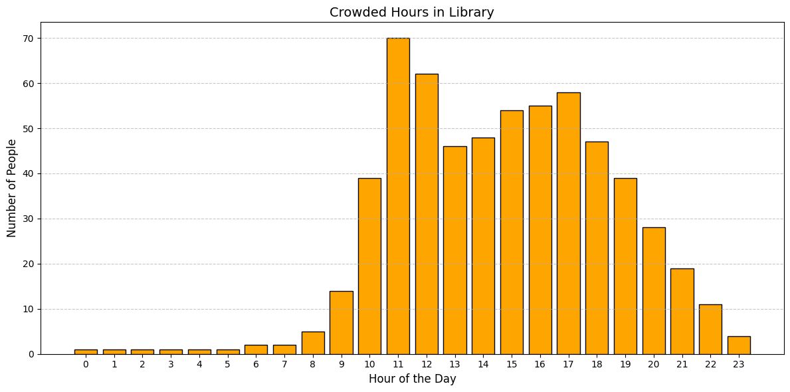
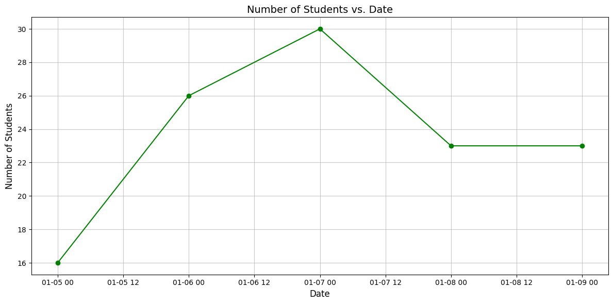
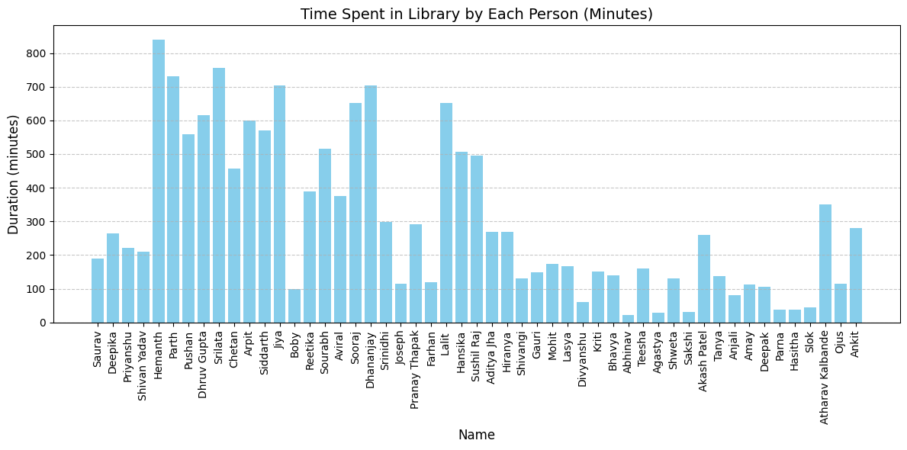

Why Library Analysis?
Ever left frustrated when you reach the library and almost all seats are full? Or struggled to find a quiet spot to study? A proper library analysis helps track seat availability, peak hours, and usage patterns, making it easier to plan your visits. By understanding these trends, we can improve space management, ensure a better study environment, and enhance overall user experience. Whether you're a student looking for a peaceful place to focus or a librarian aiming to optimize resources, library analysis provides valuable insights for a smoother experience.
I have collected data from over 70 students who visited the library during the period from 5th January to 9th January 2025, using records from the library's logbook. The data includes information on entry and exit times, total duration spent, and the frequency of visits. This survey aims to analyze student study patterns, identify peak hours, and highlight trends such as the busiest day and average time spent per session. The findings from this analysis can help improve library resource management and enhance the overall study experience.
What did we observe ?
When Is the Library Most Crowded?
The most crowded time of the day was from 11:00 AM to 12:00 PM, with a peak of 70 people (cummulative for the span of 5 days) in the library. During this hour, almost all seats were occupied, making it difficult for late arrivals to find a suitable spot. This surge in occupancy is because of a one-hour gap between core subject lectures and liberal arts lectures (12:30 pm - 1:30 pm). As a result, this period tends to be the busiest, leading to limited seating availability.
Which Day Had the Most Library Visitors?
The busiest day during the survey was January 7, 2025, with a total of 30 students recorded in the library. This high turnout could be attributed to upcoming quizzes, assignment deadlines, online assessments for placements or group study sessions. The increased foot traffic on this day resulted in a competitive search for available seats, making it one of the most active periods observed during the survey.
Who Spent the Most Time Studying?
The student who spent the most time in the library during the survey period was Hemanth, accumulating a total of 14 hours over a span of 5 days. This suggests a dedicated study routine, possibly in preparation for exams or intensive research work or can be due to irregular entry in the record book (not entering the exit time while going for snacks, lunch or dinner). Other students, such as Parth, Siddarth, and Dhruv, also logged significant library hours, exceeding 10 hours over multiple days. The graph reveals a diverse distribution of study habits, with some students utilizing the library extensively, while others spent shorter durations. This data highlights the varying study patterns among students and the importance of optimizing library resources for both long-term and short-term users.
How Long Do Students Study on Average?
On average, students spent 3.84 hours (230.40 minutes) in the library per session. While some students, like Hemanth, Parth, and Siddarth, dedicated significantly more time, exceeding 10 hours over multiple days, others had shorter visits, staying for less than 2 hours on average. The data suggests that a majority of students prefer medium-length study sessions, balancing their time between the library and other academic or extracurricular activities. Understanding these patterns can help in better space management, ensuring seating availability during peak hours and optimizing library resources to accommodate different study habits.
Difficulties Faced
- Manual data collection was challenging due to unclear handwriting in registers, making it difficult to accurately record entry and exit times.
- Some students skipped re-entering their data after short breaks, leading to inconsistencies and gaps in tracking actual time spent in the library.
- Filtering out frequent visitors manually required additional effort, as some students visited multiple times a day, making it hard to differentiate between new entries and repeated visits.
- Peak hours led to overcrowded registers, increasing the chances of errors and missing records.
- Data entry mistakes, such as incorrect timestamps or missing names, required extra verification, further slowing down the analysis process.
Conclusion
The analysis reveals that students prefer studying in the late morning, with mid-week being the busiest period. The peak hour, observed from 11:00 AM to 12:00 PM, and the busiest day on January 7, 2025, highlight the need for better crowd management during these times. Additionally, the average session length of 3.84 hours indicates that most students engage in moderately long study periods. To address these patterns, proper seating arrangements, resource distribution, and break-time regulations can be optimized. Implementing digital check-ins and real-time occupancy tracking can further reduce data inconsistencies and enhance the overall library experience.